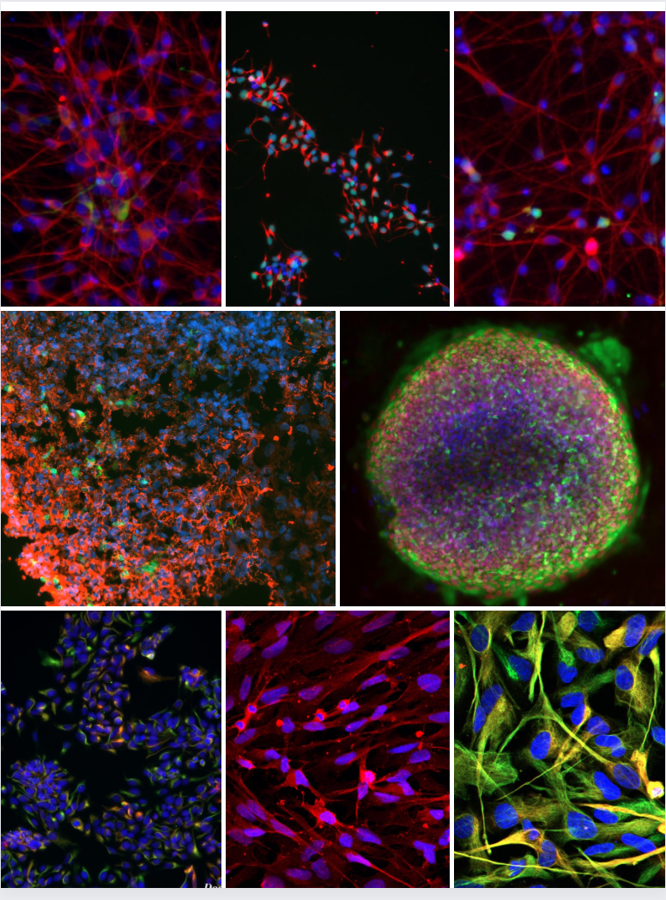

Research Interests
Dr. Julia TCW received Ph.D. and A.M. in Molecular and Cellular Biology from Harvard University with research studies in induced pluripotent stem cell (iPSC) reprogramming in the Department of Stem Cell and Regenerative Biology. She then perused her postdoctoral research in the Department of Neuroscience, Ronald M. Loeb Center for Alzheimer’s Disease, Department of Genetics and Genomic Sciences at Icahn School of Medicine at Mount Sinai, New York with a research focus of the development of iPSC models and study Alzheimer’s disease (AD) genetics. She achieved Druckenmiller Fellowship award from New York Stem Cell Foundation, 2022 Toffler Scholar award from Karen Toffler Charitable Trust, Alzheimer's Research award from BrightFocus Foundation, Carol and Gene Ludwig Award for Neurodegeneration Research, Edward N. and Della L. Thome Memorial Foundation Award, and K, R, and U awards from NIH-NIA.
Dr. TCW’s laboratory is aiming at Alzheimer's disease (AD) therapeutics using human induced pluripotent stem cells and genetic approach. There are three main goals; 1) Identifying functional genes in particular CNS cell types affected by AD genetic and epigenetic signatures, 2) Deciphering functional mechanisms of AD genetics using in vitro iPSCs and in vivo iPSC/mouse Chimera models and 3) Developing in vitro model systems of human brain for drug screen.
- Using a computational approach, we are trying to better characterize effect of genetics in AD molecular phenotypes. Taking part of a multi-lab collaboration through Functional Genomics Consortium (xQTL study) in Alzheimer’s Disease Sequencing Project (ADSP), we are collecting large scale genetics and epigenetics data from different study/project and performing integrative analysis to i) identify genetics mutation responsible of DNA methylation change in the brain (metQTL analysis), and ii) integrate these metQTL analysis with other omics data (transcriptomics, proteomics, metabolomics..) to decipher the genome wide molecular pathways associated with AD risk.
- Much of the research focuses on the effects of AD genetic risks, especially Apolipoprotein E4 (APOE4), the most significant risk factor for late-onset AD on human brain cell types. The lab uses the forward genetic, unbiased multi-Omics computational (bioinformatics) approach to uncover pathways and network defects of AD genetic risks and demonstrate molecular mechanisms of the risk factors in CNS cell types derived from CRISPR/Cas9 genome-edited isogenic and population iPSCs. They develop novel computational pipelines to identify molecular and network drivers and integrate genetics and transcriptomics/proteomics for a functional genomic study. In vitro and in vivo work have been focused on efferocytosis, lipid metabolism, matrisome and inflammation in pure human microglia, astrocytes and organoids (multiple brain cell types as a whole) associated with AD genetic risks. Further, the lab is also collaborating with the industry to find a drug target for AD therapeutics.
- The lab has developed multiple novel CNS cell type protocols including astrocytes, microglia, pericytes, neural progenitors and glutamatergic neurons and continuously put our effort to advance the 2D models to 3D human brain model to establish efficient platforms for drug screen.